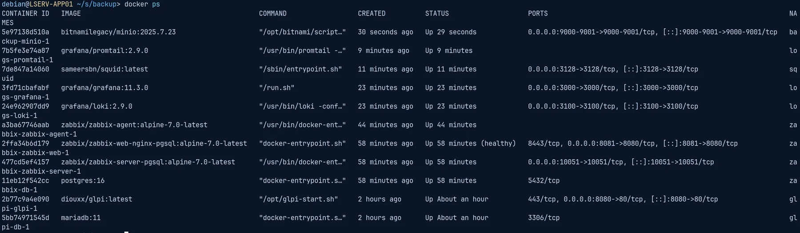

Déploiement d'un mini-SI d'entreprise conteneurisé
Monter et exploiter le SI d'une PME fictive, VEKTOR : annuaire, proxy imposé par GPO, helpdesk, supervision, logs centralisés et sauvegardes testées, sur des machines aux ressources limitées.
Cadre
BTS SIO 2ᵉ année · TD transversal
Périmètre
3 VM, 11 conteneurs
Restauration testée
≈ 2 min
Windows Server 2025
AD DS
AD CS
GPO
Squid
Docker Compose
GLPI
LDAPS
Zabbix
Grafana / Loki
MinIO
restic
Contexte & problématique
VEKTOR veut une identité centralisée, une navigation web contrôlée, un helpdesk, une supervision, des logs centralisés et des sauvegardes testées.
Les ressources sont limitées : tout le socle applicatif tourne en conteneurs Docker sur un seul serveur Linux.
Environnement
Windows Server 2025 : AD DS, DNS, autorité de certification
Debian 13 : hôte Docker, une stack Compose par service
L'ordre de construction suit les dépendances, et chaque brique est vérifiée avant de passer à la suivante.
Identité : domaine Active Directory, DNS contrôlé par les enregistrements SRV, contrôleur synchronisé sur une source de temps externe (Kerberos refuse un écart de plus de 5 minutes).
Accès web : GPO qui impose le proxy aux deux niveaux de Windows (navigateurs et services système), avec bouclage pour suivre la machine et verrouillage côté utilisateur ; Squid limité au réseau local et aux ports 80/443.
Helpdesk : GLPI branché sur l'AD en LDAPS grâce à une autorité de certification d'entreprise, compte de service en lecture seule, profil technicien donné selon le groupe AD ; catégories ITIL, 4 SLA et gabarit « Nouvelle arrivée ».
Observabilité : Zabbix 7.0 LTS sur le contrôleur et l'hôte Docker, alerte testée en coupant un agent ; logs système, conteneurs et proxy centralisés dans Grafana / Loki.
Continuité : sauvegarde nocturne chiffrée vers MinIO avec restic (dumps des bases et fichiers GLPI), rétention 7 jours + 4 semaines, puis vrai test de restauration.
Résultat
La chaîne fonctionne de bout en bout : un salarié ouvre sa session Windows, navigue via le proxy imposé et se connecte au helpdesk avec son compte AD.
Un ticket supprimé volontairement a été restauré en environ 2 minutes (RTO), pour une perte maximale de 24 h de données (RPO). Les mises en situation et le tableau de bord Grafana n'ont pas pu être faits dans le temps imparti.
Difficultés résolues
Page GLPI blanche : partition /var saturée ; données de Docker et de containerd déplacées.
Liaison LDAP refusée : le contrôleur exige la signature LDAP ; passage en LDAPS plutôt que d'affaiblir l'AD.
Agent Zabbix « indisponible » : réponses de 5 s causées par la résolution d'un nom inconnu ; liste des serveurs autorisés corrigée.
Pistes d'amélioration
Mots de passe sortis des fichiers Compose (secrets Docker, coffre)
Interfaces web derrière un reverse proxy HTTPS
Sauvegardes hors du serveur, règle 3-2-1
Compétences mobilisées
Active Directory, DNS et GPO
Conteneurisation avec Docker Compose
PKI et LDAPS
Supervision et centralisation des logs
Sauvegarde et PRA (RPO / RTO)
Documentation technique
En image

Les 11 conteneurs du mini-SI en fonctionnement : MinIO, Promtail, Squid, Grafana, Loki, Zabbix, PostgreSQL, GLPI et MariaDB.